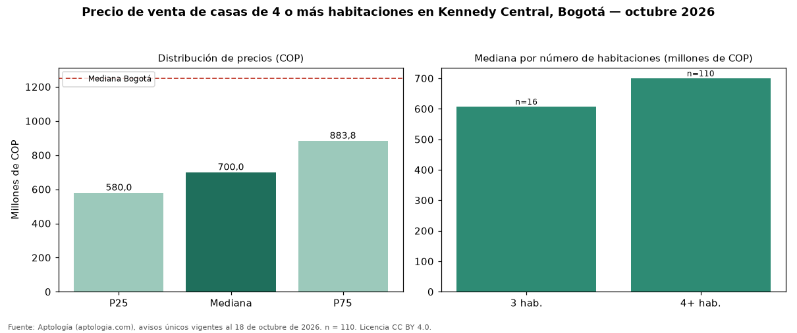

Precio de venta de casas de 4 o más habitaciones en Kennedy Central, Bogotá — octubre 2026
En Kennedy Central (localidad de Kennedy), Bogotá, la mediana de precio de venta de casas de 4 o más habitaciones es COP 700 millones, según 110 avisos únicos vigentes. Comparado con la mediana de la ciudad, COP 1,25 mil millones, la diferencia es de 44 % por debajo. Por metro cuadrado, la mediana es COP 2.772.817/m² (−38 % frente a COP 4.477.612/m² en Bogotá). En el mismo barrio, la mediana de casas es COP 608 millones con 3 habitaciones. El área mediana anunciada es 240 m² (en Bogotá: 292 m²). El estrato más frecuente en los avisos es 3. El rango intercuartílico va de COP 580 millones a COP 884 millones (razón 1,5), una dispersión moderada. Datos abiertos CC BY 4.0 de Aptología; fuente y búsqueda de inmuebles: https://www.aptologia.com/casas-en-venta/bogota/kennedy-central. Archivos: PDF de 2 páginas, CSV con las cifras y gráfica PNG.

| Avisos únicos | 110 |
|---|---|
| Percentil 25 | COP 580.000.000 |
| Mediana | COP 700.000.000 |
| Percentil 75 | COP 883.750.000 |
| Mediana por m² | COP 2.772.817 |
Fuente: avisos vigentes de portales inmobiliarios recopilados por Aptología, deduplicados (mínimo 30 avisos únicos por celda). Precios pedidos, no cerrados. Fecha: 2026-10-18.